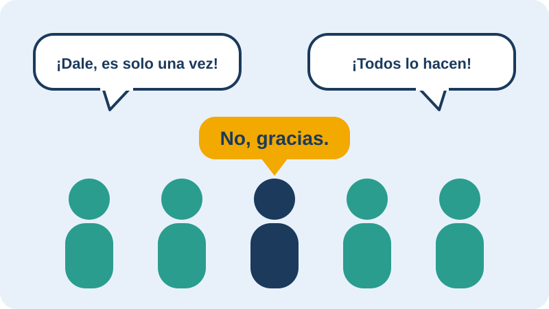

Presión de pares

Es la influencia de amigos o compañeros para que hagamos algo que quizás no queremos hacer, como probar alcohol u otras drogas o tener una relación sexual. Puede ser directa («dale, no seas aburrido») o indirecta, cuando sentimos que tenemos que hacer lo que hace el grupo.
Algunas estrategias para resistirla:
- Tener una frase lista, como «no, gracias».
- Alejarse de la situación.
- Buscar a un amigo o amiga que apoye mi decisión.
- Recordar que quien me quiere respeta mi «no».